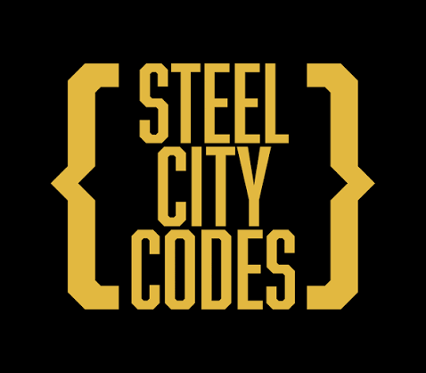

Computer Science Education
Steel City Codes.
My involvement with Steel City Codes began as an eighth-grade student, continued through three years of tutoring, and has now grown into a position on the organization’s executive team.

From student to leadership.
Steel City Codes is where I first developed a real interest in computer science. After attending the program as a student, I returned as a tutor to help younger students learn the same programming foundations that introduced me to the field.
Beginning as a student
I first joined Steel City Codes as an eighth-grade student. The program introduced me to Java and gave me one of my earliest opportunities to explore programming in a structured environment. It played an important role in developing my interest in computer science.
Returning as a tutor
From ninth through eleventh grade, I returned to the organization as a tutor. I helped students understand introductory Java concepts, work through exercises, debug their programs, and become more confident writing code.
Joining the executive team
I am now joining the Steel City Codes executive team as Incoming Financial Manager. In this role, I will help manage the organization’s finances and support the continued growth of its educational programs.